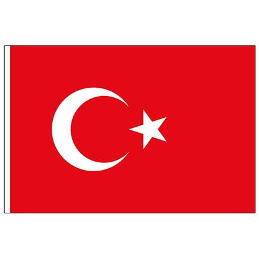

Işıklı, aydınlık bir bahar günü, bir su kenarında daha yeni göğermiş çimleri iştahla yiyen keçiler gördüm. Dişlerinin arasında ot, sanki yeniden diriliyormuşçasına yiyordu . Suya eğilince suyun güzelliğini gördüm. Hayvanlar ihtiyaçlarını gideriyorlar bununla; ama üzerine ben bir şiir yazdım. Tabiatın şiirini; oysa, mutlu keçi hiçbir zaman şiir yazamayacak. Beni ondan ayıran, onun iştahla yediği çim yahut suya dudaklarını değdirişi değil, yazdığım şiir. Ana Düşüncesi İnsanı hayvandan ayıranın, insanın sanatsal bakışı olduğudur. => Televizyon izliyorum. Sunucu telefondaki seyirciye soruyor: Bugün neyi kutluyoruz? Seyirci cevap veriyor: Atatürk’ü kaybedişimizin 64. Yıldönümünü… Şaşırıp kalıyorum. Bunların ağzından çıkanı kulağı duymuyor galiba. Ne zamandır bir kişinin ölümü kutlanıyor? Hele bu kişi Atatürk’se… Biz ölüm yıldönümlerinde Atatürk’ü anarız, kutlamayı düşmanları yapar. Görüyorsunuz dili bilmemek insanı ne duruma düşürüyor. Ana Düşüncesi
| fransa |  | |